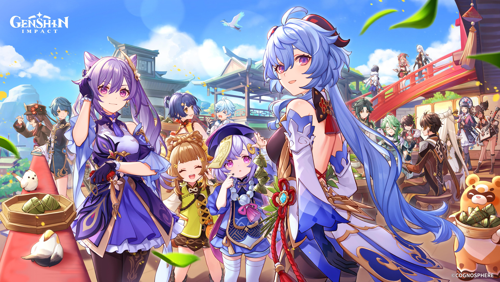

My favorite game is Genshin Impact, developed by miHoYo. I love exploring the vast world, controlling my favorite characters, and solving various puzzles. Above all, the deeply emotional and immersive storyline never fails to move me. source:https://cdn.mos.cms.futurecdn.net/7Cbpe8JbsPYc3ZfhzrP5ae.jpg